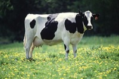

にゅうぎゅう（乳牛）の飼育数
いちばん多くとれる都道府県
にゅうぎゅうが日本でいちばん多く飼われているのは北海道です。82万1,500 頭で、全国（131万3,000 頭）の63%を占めます。

| 順位 | 都道府県 | 飼育数 | 全国に占める割合 |
|---|---|---|---|
| 1位 | 北海道 | 82万1,500 頭 | 63% |
| 2位 | 栃木県 | 5万2,800 頭 | 4.0% |
| 3位 | 熊本県 | 4万3,000 頭 | 3.3% |
この数字について
- 分類：牛の仲間
- 全国の飼育数：131万3,000 頭
- この数字が表すもの：飼育数（飼っている数）
- 調査：畜産統計調査 令和6年
- 47県分を調査（調査していない県は順位に入りません）